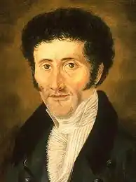
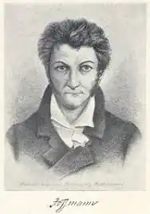
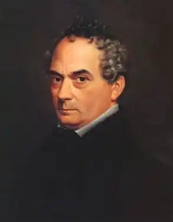

ЕРНСТ ТЕОДОР ВІЛЬГЕЛЬМ АМАДЕЙ ГОФМАН
(1776-1822)
Знаменитий німецький романтик народився в 1776 році в Кенігсберзі. Гофман мав універсальні здібності в різних сферах мистецтва. Він був автором першої німецької романтичної опери, диригентом, професійним музичним критиком, театральним декоратором, письменником, музикантом, блискучим юристом, графіком. Дивовижно не те, як різноманітні здібності могла уособлювати одна людина, а як у кожній галузі Гофман виявляв високий професіоналізм. У німецькому романтизмі не було митця більш складного й суперечливого і, разом з тим, більш своєрідного й самобутнього, ніж Гофман. Вся незвичайна, на перший погляд, безладна й дивна поетична система Гофмана, з її подвійністю й розірваністю змісту й форми, змішуванням фантастичного і реального, що сприймалось як свавілля автора, приховує в собі глибокий внутрішній зв'язок з німецькою дійсністю, сповненою гострих і болісних протиріч і з суперечливими муками зовнішньої й духовної біографії самого письменника. Він писав у найпохмуріший і найважчий час німецької історії, коли більшість європейських країн охопила політична й церковна реакція, а Германія була роздробленою. Мати його була дуже набожною, нервовою і відлюдкуватою жінкою, батько служив адвокатом, був творчо обдарований, але безпутний. Батьки розійшлися, коли дитині було лише три роки; мати переїхала в будинок своєї родини Дерферів; хлопець виховувався під впливом свого дядька юриста, людини розумної й талановитої, але фантаста і містика. У Ернста рано виявилися чудові здібності до музики й живопису, його навіть вважали вундеркіндом, хоча був він замкнений. У школі Ернст учився прекрасно, хоча й витрачав багато часу на малювання і музику. У дванадцять років хлопець вільно імпровізував на клавірі, органі, грав на скрипці, вивчав теорію музики. Ернст прекрасно закінчив курс юридичних наук у кенігсберзькому університеті у 1795 році, хоча не почував до юриспруденції особливого тяжіння і продовжував ретельно займатися мистецтвом. У Кенігсберзі він зустрів своє перше кохання Дору Хатт, вона була за нього на десять років молодша, він давав їй уроки музики. Перебуваючи в Берліні, Ернст захопився вируючим життям театрів, салонів; сам намагається поставити на сцені зінгшпіль "Маска", але його пропозицію відхилили. Здавши в 1800 році блискуче свій останній іспит, він одержав місце асесора в Познані. Доля звела його з чарівною Міхаліною Рорер-Тіщінською, і він, не роздумуючи, повінчався з нею 26 липня 1802 році. Цей шлюб з донькою міського писаря став приводом для остаточного розриву з родиною Дерферів. Гофман не міг більше розраховувати на підтримку впливового дядька. Хоча всюди в місті він був бажаним гостем, як дотепний співрозмовник, прекрасний музикант і талановитий карикатурист, його непросте становище ускладнилося карикатурами, які він намалював на відомих людей міста,— що дуже зашкодили його службовій кар'єрі. Через ці карикатури він потрапив до Плоцка на набагато гірше місце. До цього ж часу належать його перші літературний спроби в журналі. У 1804 році Гофмана перевели радником до Варшави. Тут він зійшовся з Гітцигом, своїм майбутнім біографом, і з романтиком Захаром Вернером; тут же він заснував музичне товариство, зал якого прикрасив своїм живописом. У цьому місті він вперше побував за диригентським пультом; тут було зіграно п'ять його сонат. У 1805 році народилася дочка Ернста Цецилія. Незабаром після вторгнення військ Наполеона всі прусські чиновники у Варшаві були звільнені зі служби. Гофман поїхав до Берліна — з партитурами кількох опер у портфелі і з наміром цілком присвятити себе мистецтву. Але там ніхто не зацікавився його операми, не знайшов він і місця вчителя музики. Нарешті, йому пощастило влаштуватися капельмейстером у Бамберзі; але справи театру йшли так погано, що Гофман змушений був покинути його і перебиватися приватними уроками та музичними статтями. Постійним супутником його життя стають злидні. Все пережите спричинило нервову гарячку у Гофмана. Це було в 1807 році, а цього ж року взимку померла його донька. У 1810 році один його знайомий, Гольбейн, збирався відновити бамберзький театр. Гофман допомагав йому, працюючи як композитор, диригент, декоратор, машиніст, архітектор і начальник репертуару. Та через два роки театр закрився. Гофмана знову посіли злидні. Двадцять шостого листопада 1812 року він пише в щоденнику: "...Продав сюртук, щоб пообідати". З початку 1813 року справи його пішли краще: він одержав маленьку спадщину й пропозицію посісти місце капельмейстера в Дрездені. Страшні дні серпневих битв Гофман пережив у Дрездені: він виніс на собі всі жахи війни, але був бадьорий духом і навіть веселим, як ніколи; він у цей час зібрав свої музично-поетичні нариси, написав трохи нових, дуже вдалих речей і приготував до друку ряд збірників своїх творчих здобутків (серед них повість "Золотий горщик"). Жан-Поль Ріхтер помітив у Гофмана письменницький талант і написав передмову до першого тому. Повість мала значний успіх. Невдовзі Гофман знову залишився без роботи й переїхав до Берліна. Там він знову став до роботи. На цей час припадає його зустріч з Гітцигом, який познайомив його з берлінськими романтиками, поетами і художниками. Місце радника в камергерихті цілком його забезпечувало і водночас залишало йому багато вільного часу, тож його творчий талант, підтримуваний успіхом, міг повністю розкритися. Але він марнував свій час, проводив багато вечорів, а іноді й частину ночі у винному погребі, де біля нього завжди збиралася весела компанія. Підхльоснувши свої нерви вином, Гофман серед ночі приходив додому й сідав писати. Жахи, створювані його уявою, іноді наводили страх на нього самого. Тоді він будив дружину, яка сідала коло його письмового столу з панчохою, яку плела, а в певну годину, якщо це був робочий день, письменник уже сидів у суді і ретельно працював. Значні за обсягом твори Гофмана виходять один за одним у такому порядку: "Чортовий еліксир" (1816); романи та новели для збірки "Нічні оповідання" (1817); "Дивні страждання одного директора театру" (1819); "Крихітка Цахес на прізвисько Цинобер" (1819); "Серапіонові брати" (1819); "Життєві погляди кота Мурра" (1820); "Принцеса Брамбілла" (1821); "Мейстер Фло, казка в сімох пригодах двох друзів" (1822). У 1819 році хвороба знову наздоганяє його, і він з дружиною їде на лікування в Селезію. У цей час влада вирішила поквитатися з письменником-сатириком, який вже Перебував у важкому стані. Прикутий до ліжка, він продовжував диктувати свої оповідання. У сорок сім років сили Гофмана були остаточно вичерпані. У нього розвинулося щось подібне до туберкульозу спинного мозку. Він помер 26 червня 1822 року. Гофман підводить підсумки німецькому романтизму, є найповнішим виразником кращих його прагнень, яким він надав небувалої доти яскравості й певності. У творчості Гофмана, найсуб'єктивнішого письменника, котрий перетворив кожну свою сторінку на палку особисту сповідь, зіштовхнулись у нерівному єдиноборстві велична, але самотня у своїх муках душа поета, що потребувала правди, свободи, краси від жорстокого погано влаштованого світу, в якому панує соціальна кривда, в якому все прекрасне і добре приречене на загибель або на злиденне безпритульне існування. Основний для всього романтизму конфлікт — розлад між мрією і дійсністю — набуває у Гофмана безвихідного, трагічного характеру. Основна тема його творчості — тема взаємовідносин мистецтва та життя. Свій світогляд Гофман послідовно відтворює в довгій низці незрівнянних у своєму роді фантастичних повістей і казок, у яких він мистецьки поєднує все найпрекрасніше, що створили народи упродовж всіх століть, з особистим вимислом, то похмурим і хворобливим, то смутно зворушливим, але найчастіше граціозно веселим і пустотливо глузливим. Він уміє зацікавити і дорослого читача цією строкатою фантастикою, і робить це за допомогою поєднання природного з повсякденним і навіть вульгарним: у нього примари приймають шлункові краплі, феї пригощаються кавою, чаклунки торгують яблуками й пиріжками, герцоги та графи овочевого царства нарізаються зірочками і їх кладуть у суп і т.д. Надзвичайна проза німецького життя є сіреньким тлом, на якому яскраво виграють барви його фантастики. Як психолог Гофман обрав для себе галузь невизначених почуттів, неясних прагнень, незвичайних відчуттів, магнетичних впливів, усього страшного й болісно зворушливого; марення, галюцинація, безпричинний страх, утрата душевної рівноваги — улюблені мотиви його тонких психологічних етюдів. Як новеліст, історик і етнограф, він чудово відтворює епоху Реформації і XVII століття; італійські звичаї і природу описує так, начебто десятки років прожив в Італії. Але, вірний життю в подробицях, він завжди перетворює його на строкату казку. Інший темний бік поезії Гофмана — його прагнення сповнювати читача жахом, змушувати його вірити в існування якихось похмурих сил. Таким чином, крізь усю творчість Гофмана проходять два потоки фантастики. З одного боку, радісна, барвиста фантастика, що завжди давала насолоду дітям та дорослим, і могла надихнути таких композиторів, як Вагнер, Чайковський, Шуман ("Лускунчик", "Чуже дитя", "Королівська наречена"), на дивні їх творіння. З іншого боку,— фантастика кошмарів і страхіть, всіляких видів божевілля як художнього втілення "нічного боку" душі й суспільного життя людей, якими володіють темні, страшні сили ("Еліксир диявола", "Піщана людина", "Майорат"). "Крихітка Цахес на прізвисько Цинобер" (1819) Твір Е. Гофмана "Крихітка Цахес на прізвисько Цинобер" розповідає про події, що мали місце в маленькій державі князя Деметрія. Дійовими особами твору є карлик Цахес, фея Роза-бельверда, студенти Балтазар і Фабіан, професор Мош Терпін та його дочка Кандіда, маг Проспер Альпанус. Розповідь ведеться від особи автора. Історія про маленьку потвору викриває побут і звичаї карликових князівств, які ще мали місце в Німеччині. У державі князя Деметрія кожен мешканець мав повну свободу, тому сюди злетілася велика кількість фей і магів, які понад yсe на світі ставлять свободу. Але незабаром Деметрій помер. Його місце посів Пафнутій, який вважав, що чарівникам на його землях не місце.